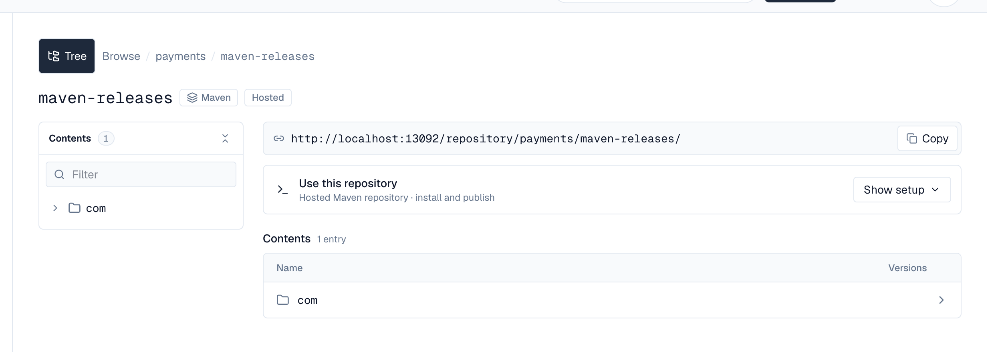
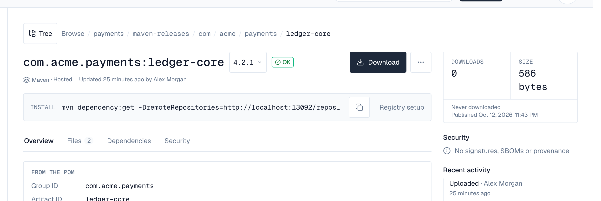

1. Overview
Browse in the left menu lists every artifact you can see, in every space, one row per package: its format, name, newest version and status (a Quarantined, Blocked or Content missing badge), the space and repository it is in, how many versions it has, and when it last changed. The newest changes come first. Select a name to open its newest version, the repository to open its tree, or the space to show only that space.
A space's overview lists its Recent artifacts, and each repository page has Open in browser; the version names in a repository's Versions tab open the browser too.
2. Search and filters
Type part of a name or a version: acme app, com.acme:app, @acme/ui, 2.1. Each word must match; the matching text is marked. Press / anywhere on the page to jump to the search.

| Filter | Meaning |
|---|---|
| Space | One or more spaces. The picker searches every space you can see, so it works with thousands; each shows how many matching artifacts it has. |
| Format | One or more formats (Maven, npm, PyPI, Docker, raw), each with its number of matching artifacts. |
| Type | Hosted, proxy, or all types. |
| Needs attention | Only artifacts whose newest version is quarantined, blocked or has content missing. |
| Sort | Recent (or Best match while searching), Name or Newest. |
Chosen spaces and formats appear as chips you can remove one by one, or all at once with Clear all. Filters are kept in the page address, so you can bookmark or share a search. Show more loads the next artifacts.
Each server keeps its own search index. Right after an upgrade or on a new server, the list may say it is getting ready for a short while; browsing the trees works meanwhile.
3. The tree
Each repository is shown the way its format is organised:
| Format | Tree |
|---|---|
| Maven | Group folders (com → acme), then each artifact with its versions |
| npm | Scopes (@acme), then each package with its versions |
| PyPI | Each project with its releases |
| Docker | Image paths (team → app), then each image with its tags |
| raw | Folders, then files |

A repository's own page starts with its address and a Copy button. Use this repository holds the setup for its package manager: choose Show setup for numbered Install steps and, when you may publish, Publish steps, each with a copy button. A step that can be done more than one way (a one-line .list entry or a .sources file for APT; pip, uv or Poetry for PyPI) offers the others as Use … instead. Private repository? Add your credentials shows where your user name and API token go, and How this repository works explains the format's details. The same card is on the repository's page under Spaces.
The tree beside it shows how many entries the top level has. Filter keeps the names that contain what you type among the folders already opened, and the collapse button closes every folder. Below the setup card, the repository's top level is a list with each package's version count.
Opening a package lists all its versions, newest first, with their status, when they were published and last downloaded, downloads and size.
Download counts and last-downloaded times are saved every few seconds (ARTIFACT_DOWNLOAD_FLUSH_INTERVAL, 5s by default), so a download can take that long to show. If a server stops abruptly, the downloads it counted in those last seconds aren't added.
4. A version
A version's page starts with its name, a version menu to switch to any other version of the package, its status, its description, and who updated it when. Download fetches its main file (Docker images show the pull command instead); the ⋯ menu holds the less common actions you're allowed: Quarantine or Release for people who manage the space's quarantine, and Yank or Un-yank for PyPI releases.

Below it, the Install bar shows the command that fetches this version (npm install, pip install, mvn dependency:get, go get, helm install, dotnet add package, docker pull, curl) with a copy button. Registry setup opens the other commands, such as Maven and Gradle coordinates, pnpm and yarn, uv, helm pull, a NuGet PackageReference, or docker pull by digest.
Choose Tree next to the breadcrumb to show the repository's tree beside the version; it's hidden on version pages to leave room, and shown on folders and packages.
| Tab | Shows |
|---|---|
| Overview | What the package says about itself, in cards: a Maven POM's packaging, parent, licenses, source code, organization and developers; an npm package's license, homepage, repository, author, tags, keywords, and its entry points and engines (with a warning when it's deprecated); a PyPI release's license, required Python version, authors, links, keywords, extras, classifiers and distributions; a Docker image's digest, kind, source and, per platform, size, build date, user, entrypoint, command, ports, environment and labels. npm packages and PyPI releases then show their README (or project description), folded until you choose Show full README, without HTML or images from other sites. |
| Files | Every file with its size, downloads and who uploaded it, a download button for each, and delete for people who may. Pick a file to see its checksums on the side. |
| Dependencies | Maven, npm and PyPI. Uses lists what the version needs, by scope (for PyPI, runtime or the extra that needs it, such as extra: socks), linked when the package is stored in a repository you can browse. Used by lists stored versions that depend on this package. |
| Layers | Docker images: each platform's layers, sizes and digests. |
| Security | SBOMs (SPDX and CycloneDX, JSON or XML) with their tool, date and number of components; build provenance (SLSA) with its builder and source; signatures (PGP, cosign, Notation, Sigstore) and other attestations, each with Details and a download. They come from the version's own files (for example a Maven -cyclonedx.json classifier, an npm provenance bundle, or a PyPI release's PEP 740 attestations) and, for Docker images, from build attestations and OCI referrers. Content the guard refused is listed at the top. |
The side panel shows downloads and size, when the version was last downloaded and published, a Security summary (signed, SBOM with its component count, build provenance), the MD5, SHA-1, SHA-256 and SHA-512 checksums of the main or picked file with copy buttons, and, for repository administrators and people who can read the audit log, its Recent activity with Full history: who uploaded, changed, quarantined, released or deleted the version and its files (needs a Pro license or higher).
A quarantined, blocked or yanked version says why under its name; downloads are refused while it's quarantined or blocked. An unlisted NuGet version is marked Unlisted; Unlist and Relist on a NuGet version's page change it (Overwrite permission, hosted repositories).
Depotex also keeps the documentation inside each version (READMEs, changelogs and guides in the package, npm READMEs, PyPI descriptions) so that AI tools can search and read it, for people who can browse that repository.
Signatures are listed, not verified. Dependencies show the version or range as written; Used by lists dependents whatever version they ask for.
5. Unsafe content is quarantined
Depotex reads POMs, package manifests, image manifests and configs, SBOMs, signatures and attestations to show them. It reads them carefully: within size, nesting and time limits, without XML document type or entity declarations, never expanding compressed content far beyond its size, and never fetching anything a document points to. Content that breaks these rules is not read, and its version is quarantined automatically — on every license tier — so builds can't use it until someone checks it:
| Reason | Means |
|---|---|
| Larger than allowed | Over the size limit for its kind of document |
| Nested too deeply / too many elements | JSON or XML built to exhaust whatever reads it |
| XML entity declarations aren't allowed | <!DOCTYPE> or <!ENTITY>, used for XXE and "billion laughs" attacks |
| Expands far beyond its size | A compression bomb |
| Took too long to read | Over the time limit |
| Malformed | Not what it claims to be (invalid JSON or XML, a broken archive). Fields of an unexpected type, common in older packages, are not a reason |
Content is checked within seconds of being published or fetched. The version's Signatures & SBOMs tab lists what was refused, and the quarantine shows the reason (source Refused content (automatic) in the quarantine list). After checking, release the version as usual: the same content isn't refused again. The quarantine raises artifact.quarantine (after, with source guard) and is recorded in the audit log.
6. Configuration
Per server, in the environment:
| Variable | Default | Meaning |
|---|---|---|
| INDEX_DIR | ./data/index | Where this server keeps its search index. It is rebuilt from the database when missing, so it needn't be backed up; give it fast local disk. |
| BROWSE_GUARD_MAX_METADATA | 4194304 | Largest POM, manifest, image config or package.json read, in bytes |
| BROWSE_GUARD_MAX_SBOM | 33554432 | Largest SBOM (and attestation layer) read, in bytes |
| BROWSE_GUARD_MAX_ENVELOPE | 16777216 | Largest signature or attestation envelope read, in bytes |
| BROWSE_GUARD_MAX_DEPTH | 64 | Deepest JSON or XML nesting |
| BROWSE_GUARD_MAX_ELEMENTS | 2000000 | Most JSON values or XML elements in one document |
| BROWSE_GUARD_MAX_RATIO | 100 | How many times its compressed size content may expand |
| BROWSE_GUARD_TIMEOUT | 10s | Longest time spent reading one document |
| BROWSE_GUARD_MAX_COMPONENTS | 50000 | Components kept per SBOM for the component list and API; a document with more is kept up to the limit and marked truncated, never refused |
| BROWSE_GUARD_MAX_DOC | 1048576 | Documentation text kept per file for AI document search (READMEs, changelogs, guides, package descriptions), in bytes; longer text is cut, never refused |
In a cluster every server keeps its own index and follows changes through Redis; a server that missed changes rebuilds its index by itself. System check shows each server's index (versions indexed, rebuilding, behind). Administrators with depot:write can ask every server to rebuild: POST /api/browse/index/rebuild.
7. API
| Request | Returns |
|---|---|
| GET /api/browse/search?q=&space=&repository=&format=&type=&status=&vuln=&sort= | Matching versions you can see, with cursor paging; vuln is any or a worst severity (critical, high, medium, low), see SBOMs |
| GET /api/browse/lanes | Repositories you can see with their newest versions |
| GET /api/spaces/{space}/repositories/{repository}/tree?node= | A level of a repository's tree |
| GET /api/spaces/{space}/repositories/{repository}/packages?node= | A package's versions |
| GET /api/browse/versions/{id} | A version, its files, checksums and download addresses |
| GET /api/browse/versions/{id}/metadata, /dependencies, /dependents, /attachments, /activity | The tabs' contents |
| GET /api/browse/versions/{id}/sbom/{n} | What SBOM attachment n of the version (its index in /attachments) lists: the document (format, tool, the software it describes, counts) and the relationships between its components (see SBOMs) |
| GET /api/browse/versions/{id}/sbom/{n}/components?q=&cursor=&limit= | The SBOM's components (purl, name, version, type, supplier, licences, hashes), in document order, with cursor paging; q keeps those whose name or purl contains it |